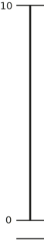

<!--
  Generated template for the MoodPage page.

  See http://ionicframework.com/docs/components/#navigation for more info on
  Ionic pages and navigation.
-->
<ion-header>

  <ion-navbar hideBackButton *navbar>
  </ion-navbar>

</ion-header>


<ion-content padding no-bounce>
  <div class="navigation">
    <button ion-button (click)="leavePage()">
      <ion-icon name="home"></ion-icon>
    </button>
    <h1>Stimmung</h1>
    <label>1/1</label>
  </div>
  <div class="inhalt">
    <div class="linkeSeite">
      <p>Wie war Ihre Stimmung? <br>
        (während den letzten <br>7 Tagen)</p>
      <div class="smiley">
        
      </div>
    <button id="zurueck" ion-button (click)="openLast()">Zurück</button>
  </div>
  <div class="rechteSeite">
    <div classe="range">
        
      <input type="range" name="likert7" id="likert" [(ngModel)]="knobValue" min="0" max="10" (change)='onChange($event.target.value)'>
    </div>
    <button id="weiter" ion-button (click)="openNext()">Weiter</button>
  </div>
  </div>
</ion-content>
